MIN LÆRING
1. SEMESTER
Her kan du se, hvad jeg har lært, hvilke kompetencer jeg har opnået, og hvordan jeg har udviklet mig gennem semesteret.
T02
PROCES
Mit første møde med webudvikling var i Tema 02, hvor jeg arbejdede med HTML, CSS og mobile-first. Med udgangspunkt i udleverede wireframes og indholdsmateriale lærte jeg at omsætte et design til en færdig og responsiv hjemmeside i VS Code. Temaet gav mig samtidig en forståelse for mobile-first tankegangen, hvor design og udvikling tager udgangspunkt i mobilvisningen, før løsningen tilpasses større skærmstørrelser. Dette gav mig en grundlæggende forståelse for, hvordan struktur, indhold og funktionalitet skal prioriteres for at skabe en god brugeroplevelse på tværs af forskellige enheder.
LØSNING
HTML og CSS er dét, der præger alle de projekter, jeg har udarbejdet, og danner derfor også rygraden i min opgave. Layout og styling af alt fra forsider til undermenuer har jeg benyttet mig af i min løsning for denne opgave. At tænke i mobile-first giver en fleksibilitet til videreudvikling, der har muliggjort at hjemmesiden udfolder sig anderledes afhængig af enhedstype og skærmstørrelse.
Farvekombinationer er noget, der særligt har præget min opgaveløsning i alle tematikker, og det er noget, jeg har brugt siden tema 02. Læringen om kontraster, læsbarhed i brugervenlighed og, helt basalt, hvilke farver, der behager øjet, har jeg med i rygsækken fra temaet.
REFLEKSION
Udarbejdelsen af den færdige kode er ikke en nænsom proces, og det tog jeg med mig fra tema 02. At kode ud fra et eksisterende design gav mig muligheden for at arbejde præcist med kode, og gav en grundforståelse for, hvor stor en rolle præcision spiller i kodning af en hjemmeside, særligt når brugervenlighed også skal være i hovedsædet.
SE PROJEKT T02
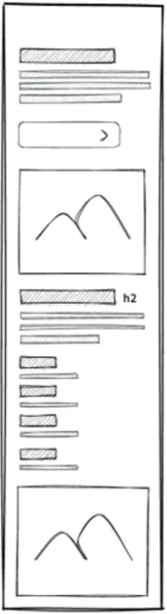
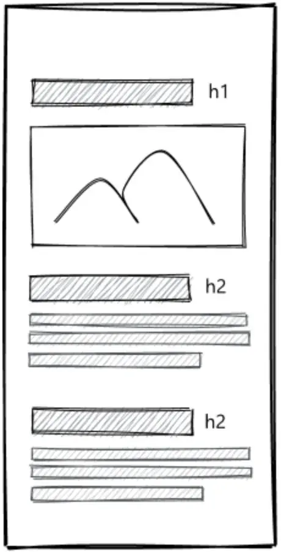
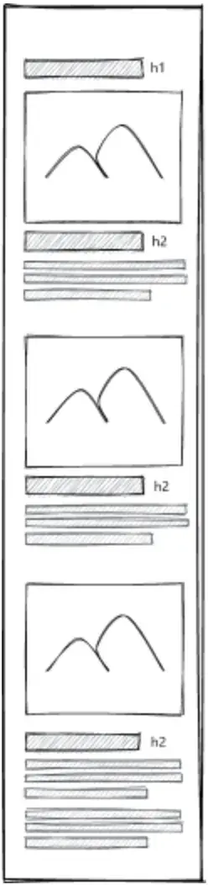
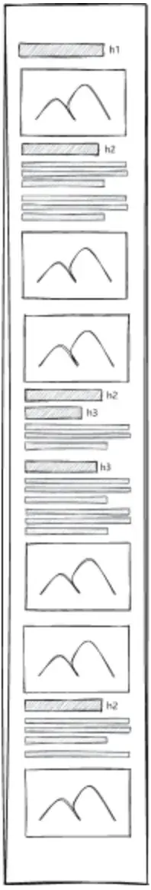
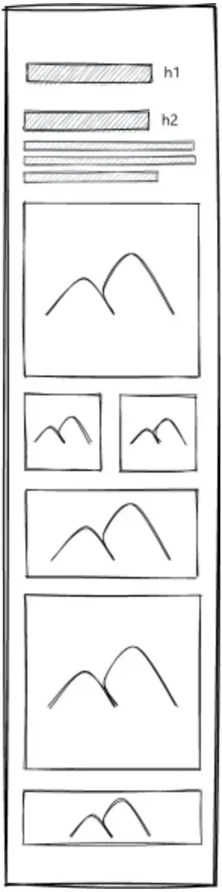
T03
PROCES
Videreudviklingen af læringen fra tema 03 har ført til en proces med mit emnesite, hvor research, målgruppe og ideudvikling er det centrale. I processen med denne hjemmeside har jeg lavet forarbejde for at danne et overblik over, hvad hjemmesiden konkret skal kunne, og hvordan brugeren sættes i centrum. Det var her, centrale værktøjer som user stories, moodboards, wireframes og visuelle prototyper blev introduceret, som alle er afgørende elementer i den kreative proces for udarbejdelsen af en velfungerende hjemmeside og en rød tråd, hvilket er benyttet i processen for denne hjemmeside.
LØSNING
Mit emnesite har gjort brug af netop disse elementer, hvor målgruppen, formålet og brugerbehovet er tænkt ind i løsningen fra start. Research-processen har dannet grundlag for arbejdet med den indledende designproces, hvor user-stories, design briefs, planlægning og wireframes har båret idéen tættere på implementering. At træffe designbeslutninger må bero sig på gennemtænkte valg frem for tilfældigheder, og dette har jeg forsøgt at opnå gennem research-fasen.
REFLEKSION
Når tema 03 var den første selvvalgte emne, valgte jeg at arbejde med et tema, hvor indholdet var velkendt for mig. Stemningen og designet kom derfor mere naturligt for mig, men at skabe sammenhæng i stemningen, designet og brugeroplevelsen var lige dele oplysende og inspirerende. Jeg blev for alvor oplyst om vigtigheden af aktive valg fra starten, og hvordan man kan begrunde disse valg i udarbejdelsen af en hjemmeside. At gå fra idé til produkt, med alle de overvejelser, der ligger deri, var enormt lærerigt, og at arbejde med at guide brugeren gennem aspekter af et selvvalgt emne på en intuitiv måde gav en forståelse, der nu afspejles i alle mine processer og designvalg.
SE PROJEKT T03
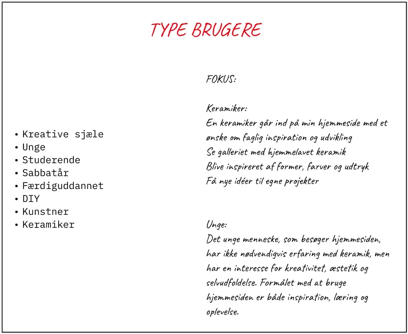
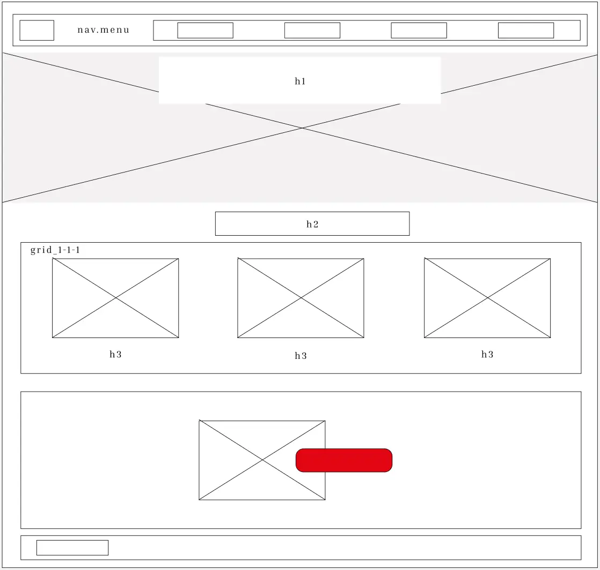
T04
PROCES
Interaktivitet i hjemmesidedynamikken var hovedfokus i tema 04, hvilket kræver design af SVG-illustrationer i Illustrator samt JavaScript, hvilket både har været en teknik, der har afledt både teknik og refleksion hos min hjemmeside. Udover at have arbejdet med at skabe interaktivitet med henblik på at drage brugeren yderligere ind i hjemmesiden, er interaktivitet og dynamik nu noget, jeg tænker ind i den kreative proces inden udarbejdelsen af hjemmesiden. Det har ligeledes fyldt i udarbejdelsen af denne, hvor interaktivitet har været et fokus fra starten.
LØSNING
Konkret har jeg anvendt interaktive elementer til at skabe en mere dragende hjemmeside, der både lokker og giver brugeren en mere legende fornemmelse gennem hjemmesiden. Koblingen mellem design og kode har gjort hjemmesiden mere dynamisk, og har åbnet mine øjne for et nyt aspekt af hjemmesideudarbejdelsens grænseløshed. Koblingen mellem den visuelle identitet og funktionalitet er noget, jeg har forsøgt at prioritere.
REFLEKSION
De tekniske kompetencer, som tema 02 gav mig, og de overvejelser om brugerrejse, som tema 03 gav mig, blev koblet sammen i arbejdet med SVG-illustrationer og JavaScript. Det muliggjorde et flerdimensionelt og interaktivt design, som også forandrede, hvordan jeg i dag tilgår hjemmesider. Det er ikke længere bare knapper og genveje, men derimod noget, der skal fange øget og drage brugeren til. Dog er der nogle fejl og mangler på emergency sitet, som jeg ikke nåede helt i mål med, men jeg fik prøvet kræfter med SVG illustrationer og JavaScript.
SE PROJEKT T04
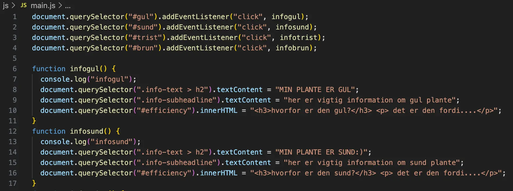
T05
PROCES
At arbejde med idéer om, hvordan en god hjemmeside ser ud, til at arbejde med reele tests og kvantitative såvel som kvalitative vurderinger af hjemmesidens funktionalitet og design er et grundelement i, hvordan jeg og mit team har tilgået denne hjemmeside. Lighthouse-test, brugertests og heuristiske evalueringer har dannet ramme for, hvordan vi har tilgået arbejdet med denne hjemmeside, hvilket alt sammen er læring fra tema 05. Tema 05 har altså givet mig et metodisk grundlag at gå til arbejdet med en hjemmeside på, hvilket har været centrale overvejelser i processen med denne hjemmeside.
LØSNING
Virksomheds sitet tager ikke blot udgangspunkt i, hvordan vi subjektivt vurderer, at en bruger ville opleve hjemmesiden, men er i stedet funderet i tests og vurderinger på et større empirisk grundlag. At gå fra analyse til et færdigt site med et solidt fundament har i høj grad været hjulpet af min viden om brugeroplevelsen, og hvordan denne kan optimeres. At udarbejde video- og billedmateriale til hjemmesiden er ligeledes noget, jeg har taget med mig fra arbejdet i tema 05, dog mest af alt i udvælgelsen af billeder til denne hjemmeside.
REFLEKSION
At gentænke en eksisterende virksomhedshjemmeside med udgangspunkt i et stærkere metodisk grundlag var en enormt interessant læring, specielt i et gruppesamarbejde, hvor de metodiske overvejelser skulle sammenkobles med aktive designvalg og hele den kreative proces. Gruppens dialektik gav en særlig og ny forståelse for, hvordan man kan se på designprocessen og valgene, der indgår deri. Med brug af AI til at skabe et logo og design var enormt lærerigt, og at virksomhedens stemning i vores valg af video- og billedmateriale gav et særligt indblik i, hvordan man kan indramme og optimere et visuelt udtryk, når det skal kobles med en god brugeroplevelse.
SE PROJEKT T05
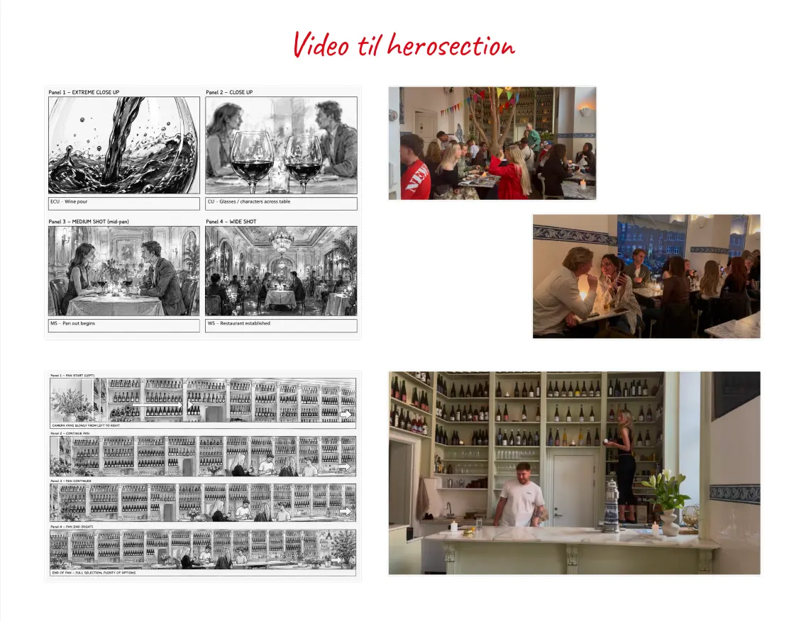
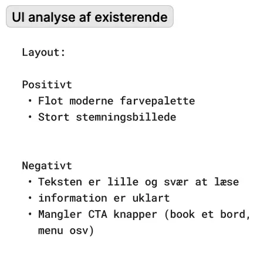
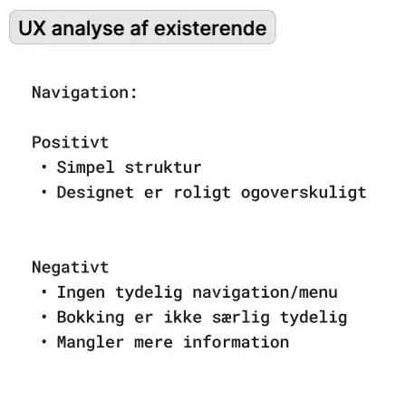
NÆSTE SKRIDT
JEG GLÆDER MIG TIL AT BYGGE VIDERE PÅ MIN VIDEN, TAGE NYE UDFORDRINGER OP OG FORTSÆTTE MIN UDVIKLING